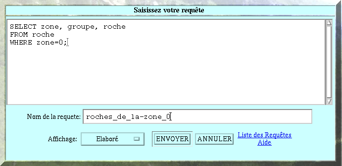
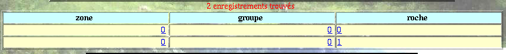
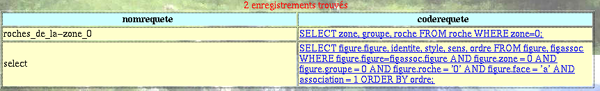

VI- LES ECRANS
8- L'écran SQL
L'écran SQL comme son nom l'indique sert d'interface entre la base de données et le langage de requêtes SQL. Il permet entre autres d'afficher les résultats sous forme de tableau à l'écran, de rediriger les résultats d'une requête vers un fichier texte et de stocker les requêtes elle-mêmes.

 ECRIRE
ET LANCER UNE REQUETE:
ECRIRE
ET LANCER UNE REQUETE:
Taper la requête dans l'espace de saisie réservé à cet effet.
Simplifié: affichage à l'écran sous forme de colonnes (il est plus rapide que l'affichage élaboré)
zone groupe roche
-------------
0 0 1

Elaboré: affichage à l'écran sous forme de tableau
Texte + Tabs: envoi du résulat de la requête dans un fichier, les colonnes de résultats seront separées par une tabulation. Le fichier aura cette forme:
0 0 '0'
0 0 '1'
Texte + Virgules: envoi du réultat de la requête dans un fichier, les champs résultats seront séparés par une virgule. Le fichier ressemblera à ceci:
0,0,'0'
0,0,'1'
 EDITER
ET RELANCER UNE REQUETE DEJA SAUVEGARDEE:
EDITER
ET RELANCER UNE REQUETE DEJA SAUVEGARDEE:

 APPELER
L'AIDE SQL: cette aide est une présentation des
différents
mots clefs du langage de requête SQL et s'appuie sur des
exercices
corrigés.
APPELER
L'AIDE SQL: cette aide est une présentation des
différents
mots clefs du langage de requête SQL et s'appuie sur des
exercices
corrigés.